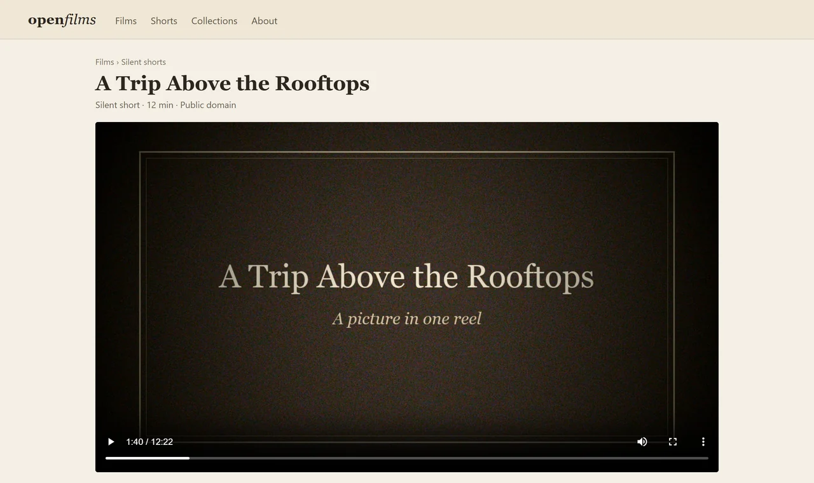
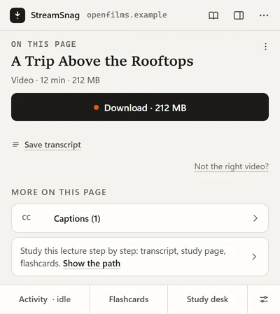
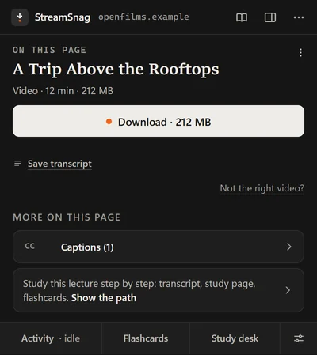
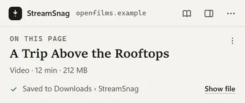
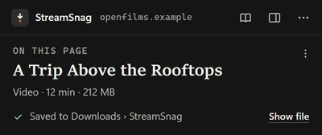
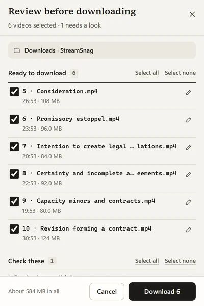
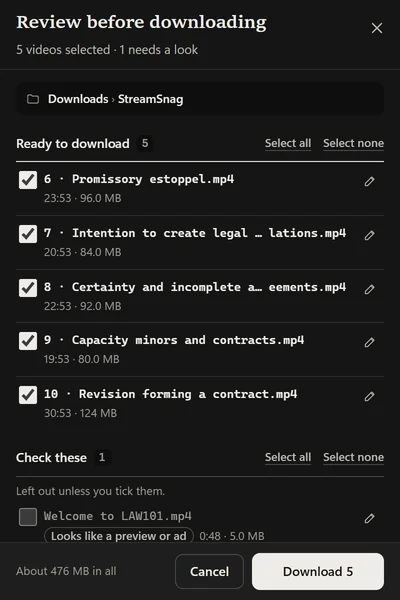

Launching soon. StreamSnag is not released yet, and Pro is not on sale yet.Launching soon. Not released yet. Pro is not on sale.
StreamSnagVideo downloader
Download the videos you like, free.
A video downloader for Chrome, Edge and Brave. It saves the video you are watching to your own folders, whether or not you ever study with it.
Unlimited video downloads, free forever. Open source, with no ads and no account.



For anything you are allowed to keep.
It was made for lectures, and it saves any recording that plays in your browser, on a page you are allowed to save from.
A talk
A conference or event recording from its own page, with its captions saved as a transcript when the page has them.
A tutorial
A lesson in code, music or a craft, kept to follow at your own pace. A series saves in order with Download all.
A recipe video
Saved for the kitchen, where the connection drops. A smaller copy takes less room on a laptop.
Your own uploads
Videos you made and posted, back on your own computer when the original file is long gone.
Public-domain and Creative Commons films
Old films from public film archives and openly licensed videos from free media libraries, kept in your own folders.
A course video, for offline
A lecture from an open course, for a train or a plane, with the slides and handouts the page links to saved beside it.
The same goes for webinars, training videos behind your own login, and podcasts: audio is found and saved too, named after the episode, and an MP3 can be made from a saved video.
Tried in November 2026, saving a video on each: the Internet Archive, Wikimedia Commons, TED and NASA's video library. Sites change how they play, so a site that works today may not tomorrow. The names belong to their owners, and StreamSnag is not connected with any of them.
Three steps.
Once it is installed and pinned to your toolbar. The icon shows a number when a page has videos.
- Open the page and press play. Many players only load the video once it starts. A few seconds is enough.
- Click the StreamSnag icon. The video is at the top, under On this page, with what it is, how long and how big.
- Press Download. The button shows the size, or the quality for a stream. Downloads carry on when the popup closes, and the popup says where the file went.


Not every video can be saved. Protected (DRM) videos never can, and StreamSnag tells you when one is. A few players hide their video in ways it can't follow, and a site can change how it plays at any time, so a page that saves today may need an update to StreamSnag tomorrow.
What it saves.
US$0, forever. No limits on files or on streams, and no nagging to upgrade.
Video files
The file a page plays, saved at the quality you choose.
Streams
HLS and DASH, the kinds most lecture and video players use, put together into one download.
Whole courses and series
Download all opens a review step first: file names in course order, copies and previews left unticked. On a long page a row of squares shows what you already have.
The files on the page
The PDFs, PowerPoint slides and handouts a lesson links to, saved beside the video.
Captions as a transcript
A video's existing captions saved as text you can read and search, with times.
Converting
An MP3 of the sound, or a smaller copy of the video.
With the helper
An optional small program on your computer joins picture and sound into one file and saves into any folder you choose.


What it cannot save.
Protected (DRM) streams. StreamSnag says so plainly and does not try to get round the protection. Live streams are a different case: many can be recorded as they play. Press “Record live stream”, then “Stop & save” when you have what you need.
Within the law.
StreamSnag saves what your browser is already playing. Whether you may keep it is up to the site and the law, so save the videos you have the right to save.
What to save
- Videos you made or uploaded yourself.
- Videos the site lets you download or keep.
- Films in the public domain, and videos under a Creative Commons licence, on the licence's terms.
- A video to watch offline yourself, where the site's terms and the law allow it.
Where the line is
- It does not get round DRM or any other copy protection, and it does not try to.
- Each site's terms and copyright law still apply, and for a course, your school's rules too.
- A saved copy is for you. Saving a video does not give you the right to share it or post it again.
Having the right to save a video is yours to check. The terms say the same.
And if you study.
StreamSnag also has study tools, sold separately as Pro: transcription, a reading edition of a lecture, study packs and mock exams. You never need them to download anything, and your first lecture through them is free.
The parts that use AI run on your own AI account: what that costs goes to your provider, never to StreamSnag.
Save the next video you watch.
For Chrome, Edge and Brave. Free, with no limits.
How to download a lecture video How to download a whole course
The free core is published under the GNU General Public License, version 3, so the code that runs can be read. Source code.